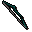

Magic longbow

| Config name | magic_longbow |
| Item id | 859 |
| Value | 2560 gp |
| Weight | 4lb |
| Members | Yes |
| Tradeable | Yes |
| Stackable | No |
| Equip slot | righthand |
| Options | Wield |
| Category | weapon_bow |
| Level required | 50 |
| Defined in | scripts/skill_combat/configs/ranged/bows.obj |
| Equipment stats | Range att 69 |
Magic longbow
A nice sturdy magical bow.
How to make
| Skill | Level | XP | Ingredients | Tool | How | Where | Makes |
|---|---|---|---|---|---|---|---|
| Fletching | 85 | 91.5 | Magic longbow, Bow string | use on item | 1 |
Referenced in scripts
scripts/_test/scripts/debug/debug_specs.rs2scripts/levelrequire/scripts/tier50.rs2scripts/levelup/scripts/levelup_unlocks_fletching.rs2scripts/minigames/game_trail/scripts/hard/trail_clue_hard_reward.rs2scripts/skill_combat/scripts/player/player_special_attack.rs2scripts/skill_combat/scripts/pvp/pvp_special_attack.rs2